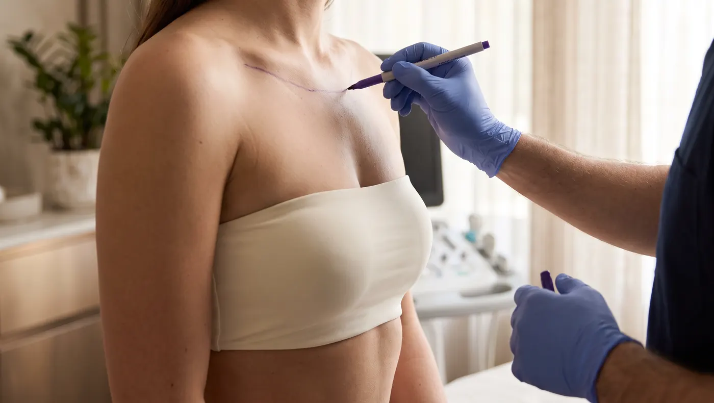
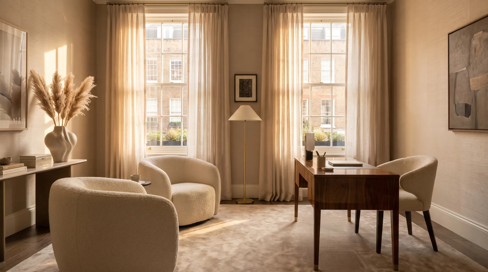

Ethical guidance
He will never recommend surgery you do not need. Expect honest advice without sales pressure.
Consultant-led breast reduction surgery with Mr Manaf Khatib, to lift the weight from your shoulders and restore comfort, proportion and everyday ease.
Read verified patient reviews of Mr Manaf Khatib on Doctify.
Do your shoulders ache by lunchtime? Tired of bra straps that dig in, sports bras that never quite work and clothes chosen to hide rather than fit? We understand, and you are not alone. Breast reduction surgery removes excess tissue and skin, then lifts and reshapes what remains. The result is a lighter, balanced figure that finally feels like yours, with the freedom to move, dress and breathe easily.
Drag the handle to compare. Every result belongs to a real patient of Mr Khatib, photographed without retouching.
All photos show real patients of Mr Manaf Khatib and are displayed with their written permission. Results vary from person to person and depend on your anatomy, skin quality and healing.
"I was always in a lot of pain with my shoulders."
"I've just never felt better with myself."
At 19, Milly had lived with shoulder pain and clothes that never fitted for years. After researching where to have surgery and reading other patients' reviews, she chose Mr Khatib.
"Straight away my mind was put at ease. Dr Khatib was so kind and the rest of the staff was just so helpful. There was honestly nothing for me to worry about."
Start my journey"The results make everything worth it, and I would just say go ahead and do it."
Shared with Milly's permission. The video ends with her after photo. Results vary between patients.
For most women the change is felt before it is seen. The ache eases, the straps stop digging and life gets lighter.
Less weight on the chest means less strain on the muscles that carry it all day.
Stand taller without fighting forward pull, and move with more ease.
Run, swim, stretch and train in comfort, with a sports bra that finally does its job.
Buy tops and dresses for your frame rather than your bust, and choose bras for style, not survival.
Say goodbye to rashes, sweating and irritation in the fold beneath the breast.
Lifted, balanced breasts that suit the rest of your body and boost your confidence.
"Wants comfort and proportion, not a cosmetic look."
The most common reason women see Mr KhatibYou may be a good candidate for a breast reduction or reduction mammaplasty if any of these sound familiar.
You should be in good general health, at or near a stable weight and ideally a non-smoker. If you are planning a pregnancy, we will talk through timing, as well as breastfeeding after surgery.
Check my suitabilityBreast reduction surgery removes excess glandular tissue, fat and skin, then reshapes the remaining breast into a smaller, higher cone.
The nipple and areola stay attached to a carefully designed pedicle, a bridge of living tissue that carries their blood supply and nerves. This lets Mr Khatib move the nipple up to a natural height while preserving sensation where possible, and often the ability to breastfeed. The areola can be reduced at the same time.
The breast is then rebuilt from the inside with deep sutures that support the new shape, rather than relying on the skin alone. Mr Khatib uses a drainless technique where suitable, and closes the skin in layers for the finest scar he can achieve.
Anchor or Wise pattern. Around the areola, straight down and along the breast fold. Best for larger reductions and very loose skin.
Vertical or lollipop pattern. Around the areola and straight down. Suits moderate reductions with good skin quality.
Periareolar pattern. A single scar around the areola edge. Only suitable for small reductions or areola reduction alone.

From your first conversation to your one-year review, you see the same surgeon at every step.
An unhurried appointment with Mr Khatib. He listens to your symptoms and goals, examines and measures the breasts, and explains your options, scars, risks and recovery honestly.

You receive a bespoke plan and a personalised, transparent quote with no hidden extras, and time to think it over with no pressure to decide.
Mr Khatib marks you before surgery and performs every step himself under general anaesthetic. Most patients go home the same evening.
Rest at home in your compression bra. A nurse checks your wounds at one week. Most people return to desk work and gentle exercise at around two weeks.
Review with Mr Khatib at six weeks, when moderate exercise resumes and the support bra comes off. Full activity returns at around three months.
Your shape settles and scars soften over the year. Mr Khatib sees you at one year and yearly after that, so your care never just stops.
He will never recommend surgery you do not need. Expect honest advice without sales pressure.
One of the few UK plastic surgeons to pass both the UK and European board examinations.
Fellowships at the Cadogan Clinic, the Wellington Hospital, Guy's and St Thomas' and the Royal Marsden.
Every incision is planned and closed with care for natural shape and the finest possible scar.
Your operation is designed around your anatomy, goals and lifestyle, never a standard package.
The same consultant from consultation to your yearly review, close to home in London or Hertfordshire.
Consultant Plastic, Reconstructive & Aesthetic Surgeon
Mr Khatib is a consultant plastic surgeon based in London and Hertfordshire, with his NHS practice at the Lister Hospital in Stevenage. Breast surgery is at the heart of his work, from breast reduction and lift to complex microsurgical breast reconstruction.
He qualified from St George's, University of London in 2010 with a distinction in medical sciences, then completed an academic surgery programme at Imperial College London and a Master's in Surgical Sciences with distinction at the University of Edinburgh. His specialist training took him through Cambridge University Hospitals, Norfolk and Norwich and the renowned St Andrew's Centre for Plastic Surgery.

Your price Confirmed at consultation
The cost of a breast reduction in London or Hertfordshire depends on the size of the reduction, whether you also need a lift or liposuction, and your choice of hospital. You receive a personalised quote once your plan is confirmed at consultation.
Finance is available through the Cadogan Clinic and One Hatfield Hospital, subject to status.
Still wondering about something? Ask Mr Khatib directly at your consultation, or call us on 020 3475 0840.
Many women can, because the pedicle technique keeps the nipple connected to the milk ducts beneath it. It cannot be guaranteed, so if future breastfeeding matters to you, tell Mr Khatib at consultation and he will plan with that in mind.
Most patients keep good sensation. Some notice numbness or extra sensitivity for a few months while nerves recover. Permanent loss is uncommon and is one of the risks discussed openly before surgery.
The aim is a size in proportion with your frame that relieves your symptoms. You will talk through cup size goals at consultation, and Mr Khatib will explain what can be safely achieved with your anatomy.
A lift is part of every breast reduction. Liposuction to the sides of the chest can be added, and some women combine surgery with a tummy tuck. Mr Khatib will advise whether combining is safe and sensible for you.
Ideally you are at a stable weight you can maintain. Large weight changes after surgery can alter your result, so if you plan to lose weight, it is usually best to do so first.
NHS funding is now very limited and varies by area, with long waiting lists. Mr Khatib's private practice lets you choose your surgeon, hospital and date, with consultant-led care throughout.
Packages abroad can look cheaper, but follow-up, complications and revisions often fall back on you at home. With Mr Khatib your surgeon is local, accountable and available for reviews long after surgery.
Breast reduction is usually classed as cosmetic and is rarely covered. Some insurers consider cases with significant symptoms, so check with your provider. Mr Khatib is recognised by Bupa, AXA Health, Aviva, Vitality, WPA and Aetna.
Tell us a little about yourself and our team will call you to arrange a time with Mr Khatib at the clinic that suits you best.